Charcoal Artist · Glassboro, NJ
Hand-drawn from a single photograph, one piece at a time. Self-taught, ten years in, mostly dogs — occasionally whoever else you love.
Selected work
Mostly dogs and cats, occasionally other animals — each drawn in charcoal, sometimes with a touch of colored pencil or chalk.
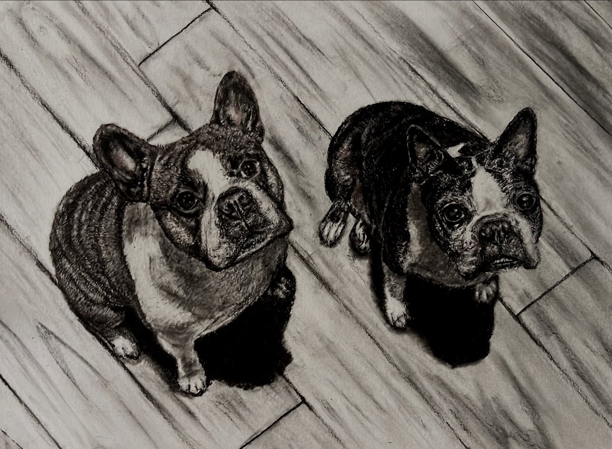
Charcoal & colored pencil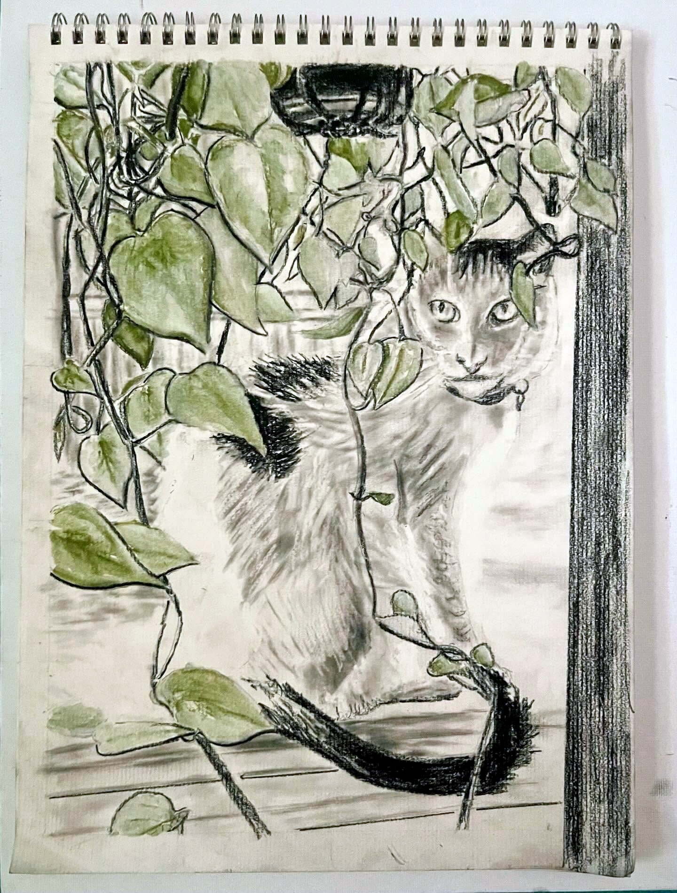
Charcoal & pastel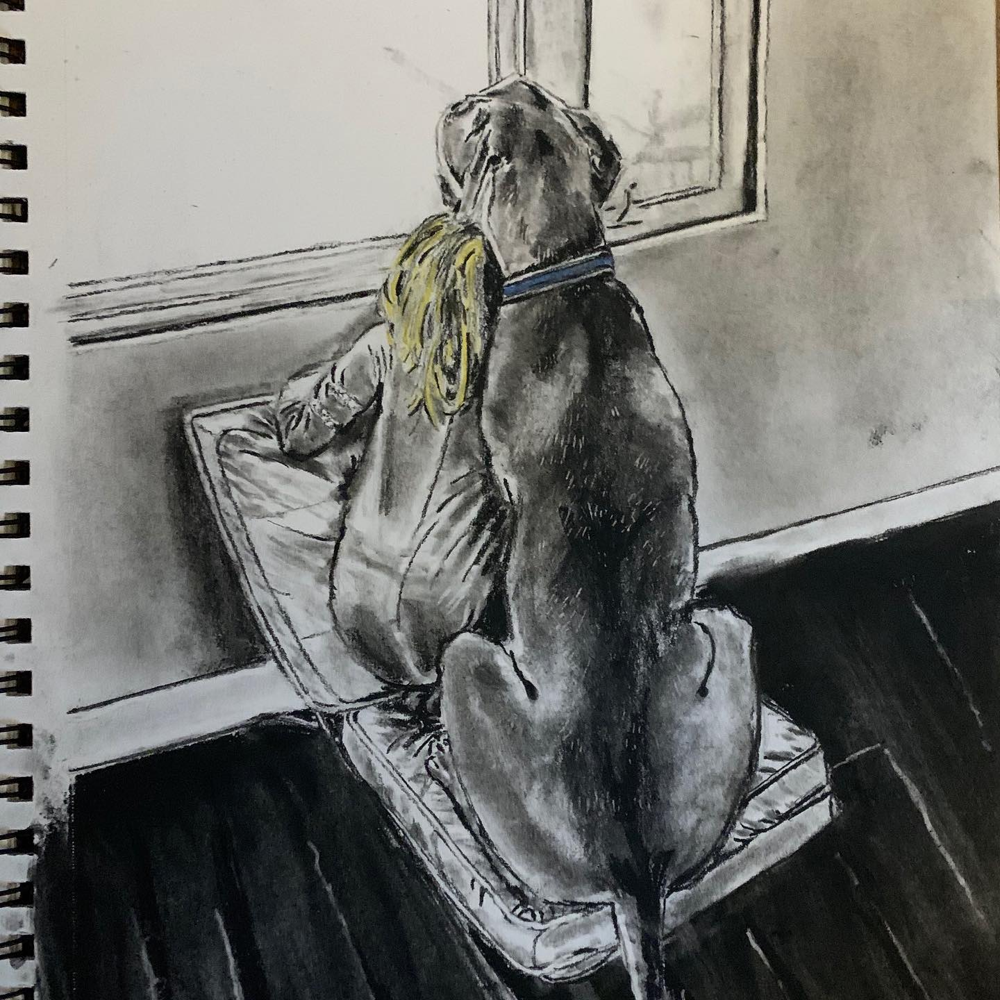
Charcoal on grey, colored chalk · commission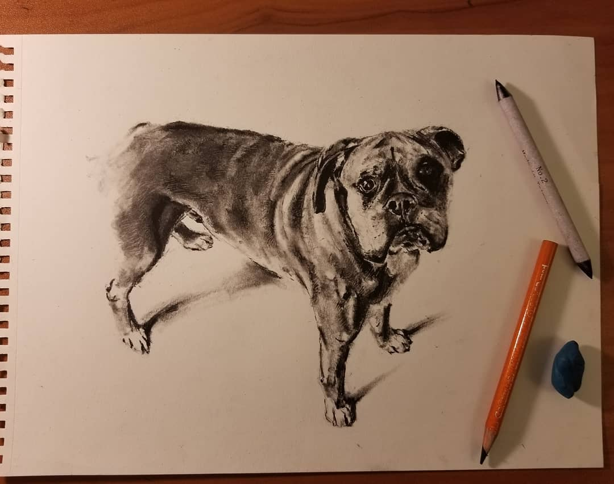
Charcoal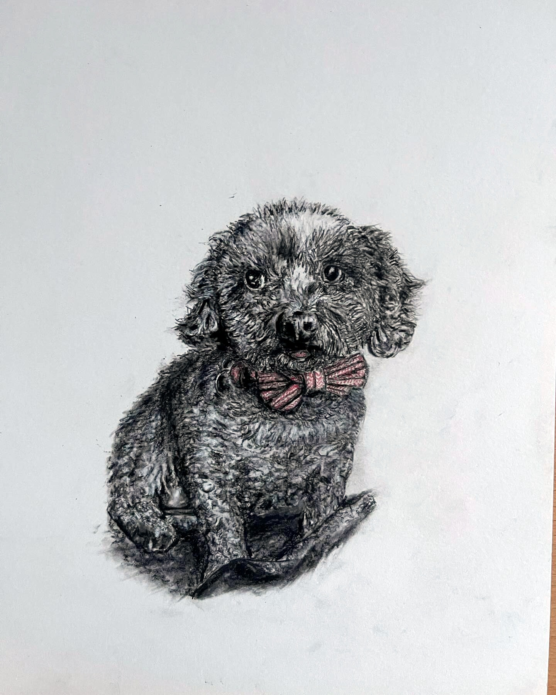
Charcoal & colored pencil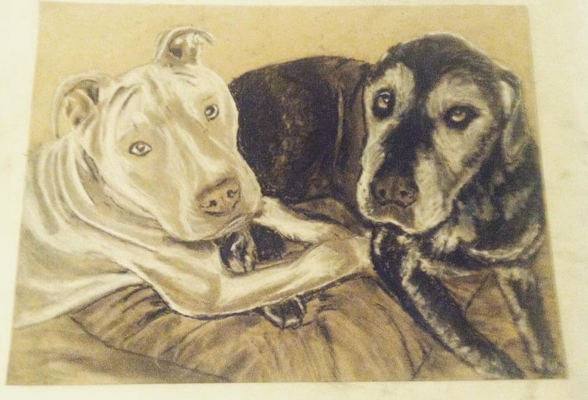
Charcoal on tan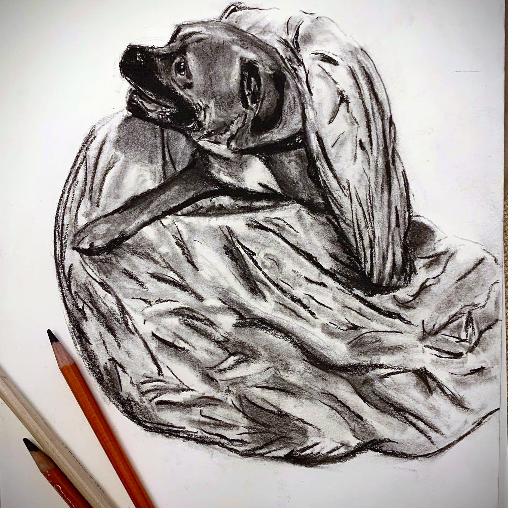
Charcoal & pencil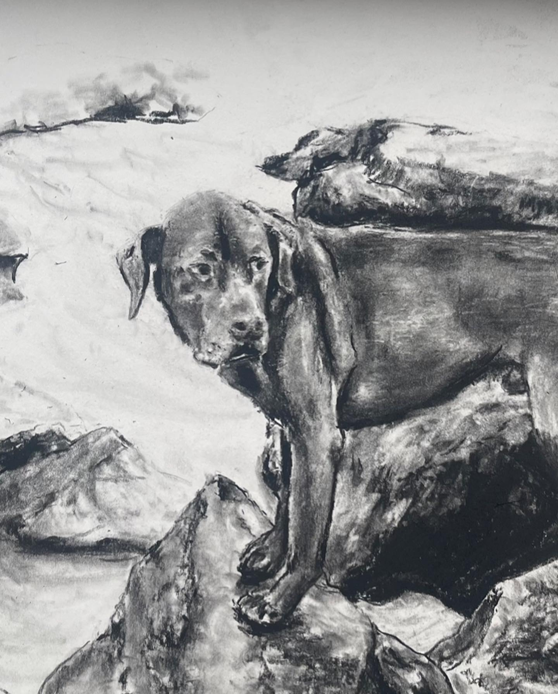
Charcoal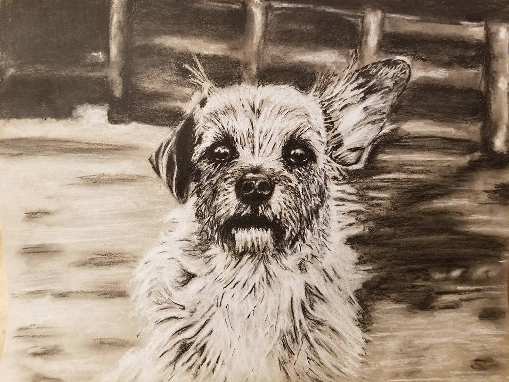
Charcoal & colored pencilSketchbook
Occasional experiments in pen, landscape, and letting the weird in.
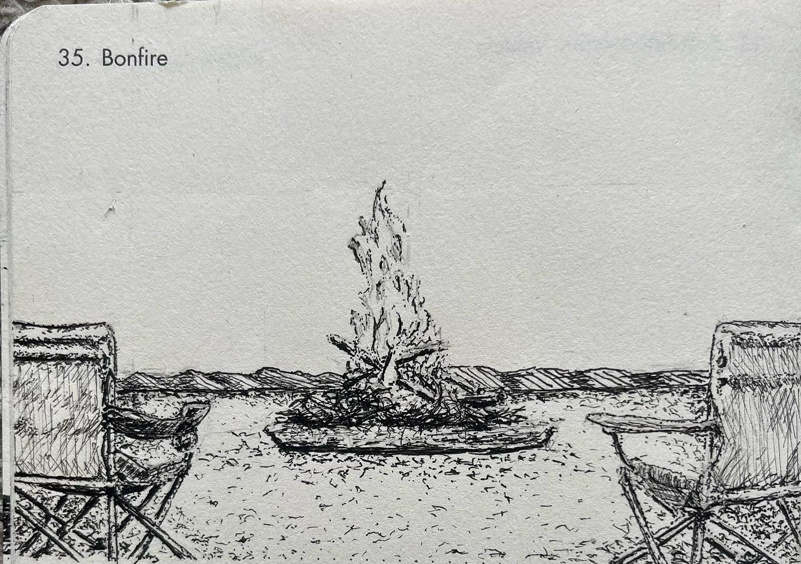
Pen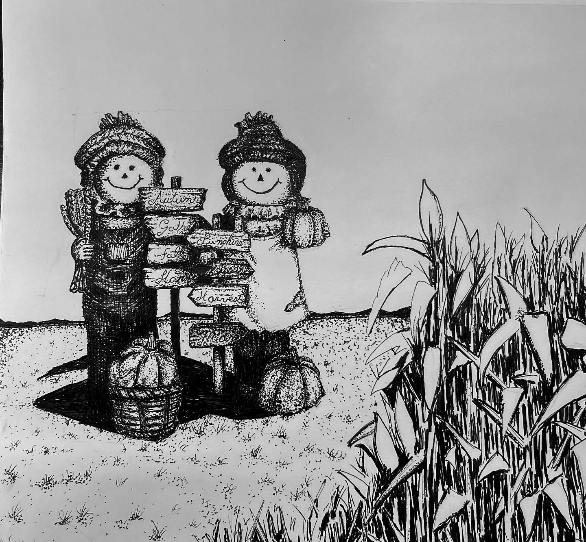
Pen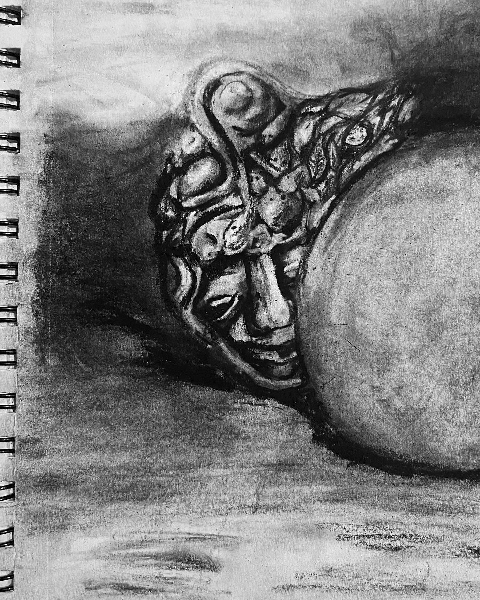
CharcoalAbout
My father could do almost anything — paintings, carvings, things built by hand. Clearly the creative gene was in there somewhere, lying low.
I didn't pick one up myself until about fifteen years ago. I was home during a rough patch with a lot of time on my hands when I came across a photo of a Labrador and thought, I'd love to be able to draw that. I had no business thinking that. I tried anyway.
Here's what flipped it for me: a drawing is really just a pile of shapes, and regardless of the color in front of you, it's all a play of light and dark tones. Once I started seeing that, the whole thing went from something I didn't know I could do to a mystery I was certain I could solve. That became my mantra — draw what you see — and I still mutter it whenever I get lost halfway through someone's fur.
I've never trained formally. I pick up the odd technique here and there, but mostly I just dive in. I rarely know how I'll pull off the hair or some tricky texture; I only know that I will, eventually, probably. That same stubborn instinct now has me teaching myself software.
How it works
I draw from a single source photo, exactly as it's captured. I don't combine photos, swap backgrounds, or quietly delete the ugly couch behind your dog. Each piece comes out the way it comes out.
The background in your photo is the background I'll draw — so your photo is the single biggest factor in how the portrait turns out.
I work in 9×12. Charcoal has its own resolution: I can push real detail into the eyes and fur, but it's an interpretation in one medium — not a photocopy with extra steps. A sharp, well-lit photo lets me take that detail much further.
Since I draw what's there, a clean background keeps the spotlight on your animal.
Commissions
I take one commission at a time, with at least a 45-day window from when we agree to when I start. Not a fast turnaround — a careful one. Think slow food, but for art, and with more eraser smudges.
If that fits how you'd like your animal immortalized, I'd love to hear about them. Send your best photo and a little about your pet, and I'll reply with a quote and where you land in the queue.
I also take the occasional commission of nature, landscapes, or still life. People are where I draw the line — pun fully intended.
Kind words
"I look at this every single day and love it more and more."
— @lucifurrbean"This is awesome!"
— @chrissybelle951"Bravo!"
— @aesse_artGet in touch
Tell me a little about your pet and attach your best photo. I read every message and reply personally — no bots, no auto-replies, just me.
or write directly to hello.michaelnocito@gmail.com